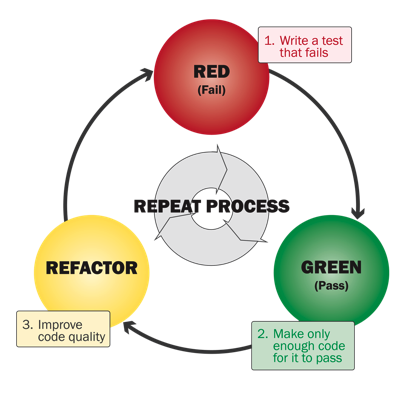
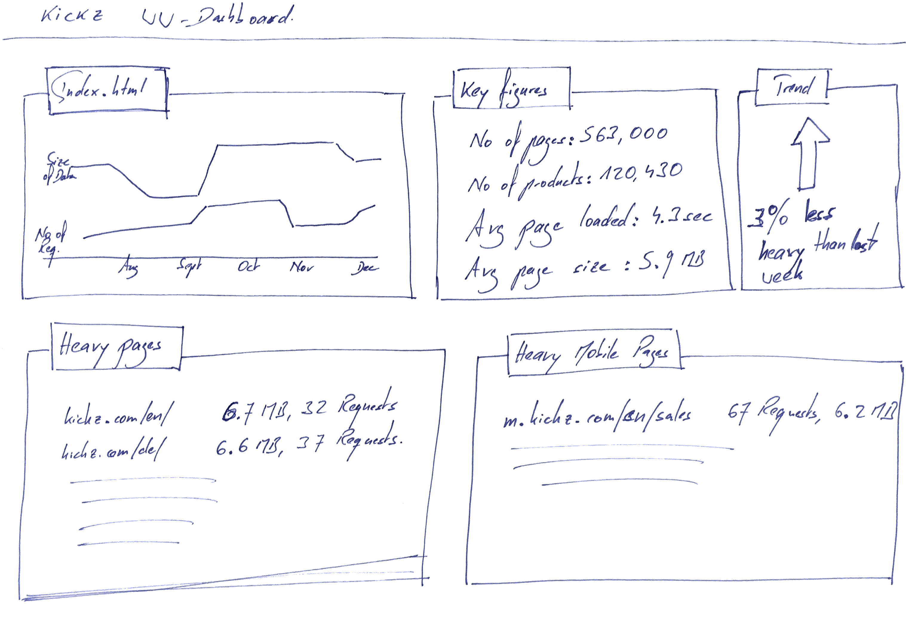

SiteWeightWatcher - hält Ihre Website schlank
Gute Softwareentwickler testen ihre Sachen. Und die TDD (Test Driven Development)-Süchtigen sind wahre Fanatiker, wenn es ums Testen geht. Diese Leute denken normalerweise in Code, sei es Java, Python, nodeJS, Sie nennen es. TDD bedeutet, dass Sie zuerst Tests schreiben und dann nur so viel Code, wie nötig ist, um die Tests grün werden zu lassen. Dann überarbeiten Sie Ihren Code und erst dann beginnen Sie, Tests für neue Anforderungen zu schreiben.

Das ist sehr testlastig. Meiner Meinung nach, wenn Sie es so machen, wie es in den Büchern geschrieben und beschrieben ist, werden Sie schrecklich langsam und es wird unsinnig. Aber das ist eine andere Diskussion, die ich hier nicht klären möchte...
Was bei den meisten Testansätzen, die ich in der Vergangenheit gesehen habe, fehlt, sind die folgenden zwei Dinge:
- Die Testleute und Testwerkzeuge hören auf, die Software oder Website zu überwachen, sobald sie in Produktion gegangen ist. Irgendwie haben sie das Gefühl, dass ihre Verantwortung mit dem Livegang endet...
- Sie testen die Software. Nicht den Rest, d.h. das Design, das HTML, das CSS usw. Und die Benutzererfahrung, das Gefühl, ob das, was ich sehe, berühre, durchsuche, navigiere, von guter Qualität ist, wird stark von dieser Verpackung der Softwarelogik beeinflusst.
Ich suche also nach einem Werkzeug, um (webbasierte) Software zu testen, sobald sie in der freien Wildbahn ist und während der gesamten Benutzererfahrung. Stellen Sie sich eine Website vor, einen einfachen Blog. Sie könnte perfekt gewesen sein, als sie gestartet wurde, aber im Laufe der Zeit verschlechtert sie sich: Die Designer haben so viele Schnickschnack hinzugefügt, das Volumen des Inhalts ist gewachsen, es wurde optimiert, um auf Mobilgeräten besser nutzbar zu sein... Und schließlich ist die Seite aufgebläht, schwer und langsam. Warum muss ich warten, bis meine Benutzer es mir sagen (das wäre Beschweren)?
Bei mgm technology partners haben wir automatisierte Test-Suiten, die jede Nacht laufen. So haben Entwickler, die Code eingebaut haben, der die Software verlangsamt, jeden Morgen einen Bericht in ihrem Posteingang.
Also, was sollte mein SiteWeightWatcher tun:
- Tests alle 5-30 Minuten gegen die Produktionsseite ausführen
- Alle Seiten überprüfen, nicht nur index.html
- Sofort melden, wenn Seiten langsamer werden (das wäre langsamer als sie es früher waren)
- Schlüsselzahlen verfolgen und wie sie sich im Laufe der Zeit entwickeln:
- Wie viele Daten werden für jede Seite übertragen?
- Wie viele Anfragen gehen hin und her?
- Wie lange dauert die Produktsuche? Im Laufe der Zeit...
- Wie gut ist die Seite für Benutzer in Deutschland, Großbritannien, den USA oder Asien verbunden? Im Laufe der Zeit, da sich diese Dinge ändern, ohne dass wir etwas getan haben.
Ich könnte mir ein Dashboard für einen Online-Shop wie KICKZ.com so vorstellen:

Ein Dashboard, das zeigt, wie sich die Seitengrößen entwickelnUnd genau wie die normalen Testteams sollten sich auch diese Tests weiterentwickeln und immer mehr an die Seite, ihre Funktionalität und ihre Benutzer anpassen. Wann immer wir ein echtes Problem oder einen Fehler da draußen haben, müssen wir sicherstellen, dass unser WeightWatcher ihn findet, falls er erneut auftreten sollte.
Wie könnten wir beginnen, ein solches Werkzeug zu bauen? Einige Gedanken:
- Wir haben Agenten und einen zentralen Server. Die Agenten sind weltweit oder in verschiedenen Netzwerken verteilt (denken Sie an kleine Docker-Images, die auf verschiedenen Clouds laufen). Sie berichten alle ihre erfassten Daten an den zentralen Server. Hier werden die Berichte erstellt und eine interaktive Erklärung der Daten bereitgestellt.
- Die Agenten beginnen mit der Erfassung einfacher Metriken:
- Anzahl der HTTP-Anfragen pro Seite
- Übertragene Daten pro Seite
- Anzahl der JavaScript-Zeilen pro Seite
- Zeit zum Laden der Daten
- Zeit zur Ausführung von JavaScript
- Basierend darauf beginnen wir mit einfachen Berichten:
- Wie groß ist die durchschnittliche Seitengröße?
- Wie viele Anfragen gibt es durchschnittlich pro Seite?
- Was sind meine schwersten Seiten?
- Ein Diagramm, das die Verfügbarkeit meiner Seite sowie die Ladezeit über eine 24-Stunden-Skala, eine Woche, einen Monat zeigt. Vielleicht erleben meine Benutzer langsames Laden nur abends.
Von dort aus erweitern wir die gesammelten Daten sowie die Berichte.
Ein solches Werkzeug wäre großartig, um Seiten zu überwachen, für die ich verantwortlich bin (d.h. Websites, die wir bei mgm entwickelt haben), könnte aber auch wertvolle Informationen über andere Marktteilnehmer liefern. Es könnte sowohl von technischen Leuten als auch von den Marketing-Leuten genutzt werden - da sie manchmal auch die Leistung beeinträchtigen. Ich wäre neugierig, diese Art von Statistiken für Zalando zu sehen 😜
Kennt jemand ein solches Überwachungssystem? Bitte lassen Sie es mich wissen.